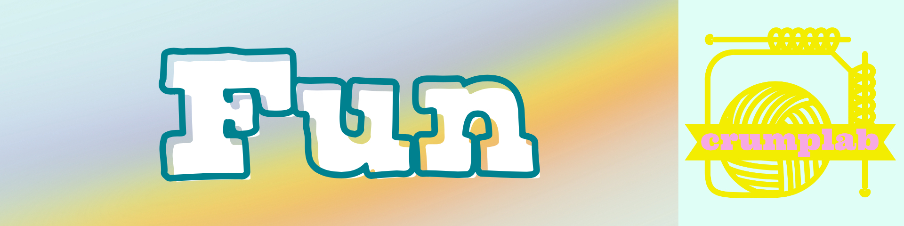

Fun

Music
RS
Released in Fall 2020, available on most major music streaming services https://distrokid.com/hyperfollow/homophony/rs.
Cover art generated by an AI.
More synthpop, less vocoder

VO
Released in Fall 2020, available on most major music streaming services https://distrokid.com/hyperfollow/homophony/vo.
Cover art generated by an AI.
Synthpop, lots of vocoder.

Painting
things
When I find time to make visual things I take pictures of them, and post them here https://crumplab.github.io/things/